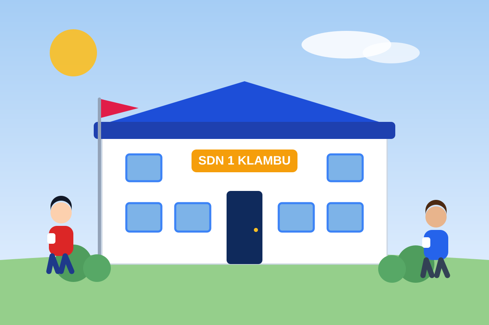
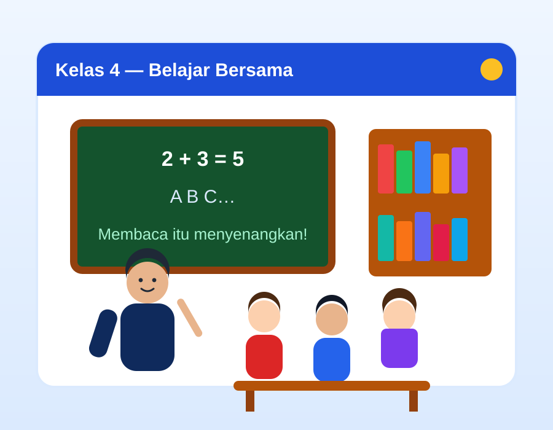

Mengenal lebih dekat sekolah kami: sejarah, visi misi, data sekolah, dan tenaga pendidik.
SD Negeri 1 Klambu merupakan sekolah dasar negeri yang berlokasi di Desa Klambu, Kecamatan Klambu, Kabupaten Grobogan, Jawa Tengah — tepat di pusat pemerintahan kecamatan, ± 20 km dari ibu kota kabupaten Purwodadi.
Sebagai institusi pendidikan formal di bawah naungan Dinas Pendidikan Kabupaten Grobogan, kami melayani anak usia sekolah dari Desa Klambu dan sekitarnya (Jenengan, Kandangrejo, Menawan, Penganten, Selojari, Taruman, Terkesi, dan Wandankemiri).

| Nama Sekolah | SD Negeri 1 Klambu |
| NPSN | 20219845 |
| Status | Negeri |
| Bentuk Pendidikan | Sekolah Dasar (SD) |
| Tahun Berdiri | 1988 (SK Pendirian) |
| Akreditasi | B — Baik |
| Kurikulum | Kurikulum Merdeka |
| Waktu Penyelenggaraan | Pagi (06 fullday) 07.00–13.30 |
| Alamat Jalan | Jl. Raya Klambu |
| Desa / Kelurahan | Klambu |
| Kecamatan | Klambu |
| Kabupaten | Grobogan |
| Provinsi | Jawa Tengah |
| Kode Pos | 58155 |
| Telepon | (0292) 123-456 |
| sdn1klambu@gmail.com |
“Terwujudnya peserta didik yang beriman, cerdas, mandiri, berkarakter, dan peduli lingkungan melalui pembelajaran bermakna.”

Kepala Sekolah SDN 1 Klambu
Bapak Nuranis, S.Pd.SD memimpin SDN 1 Klambu dengan semangat kolaborasi. Bagianya, sekolah bukan hanya tempat menuntut ilmu, tetapi rumah kedua tempat anak tumbuh merdeka untuk bermimpi.
Di bawah kepemimpinannya, sekolah terus membenahi pembelajaran, memperkuat karakter, dan merawat budaya positif antar warga sekolah.
Sekolah ramah anak & digitalisasi pembelajaran
“Semua anak bisa berhasil, pada waktunya.”
Tim pendidik berdedikasi yang siap mendampingi tumbuh kembang putra-putri Anda.

... dan 14 guru & tenaga kependidikan lainnya. *(Data nama guru dapat disesuaikan dengan kondisi terkini oleh operator sekolah.)*